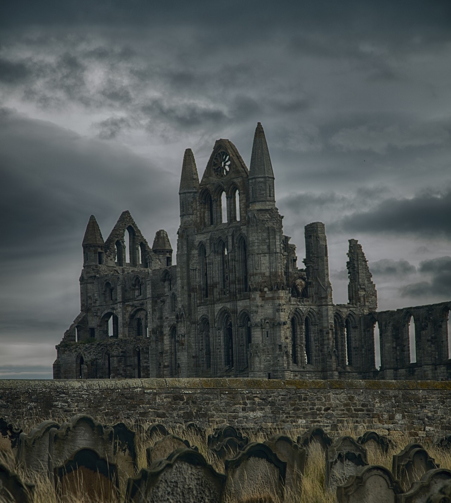
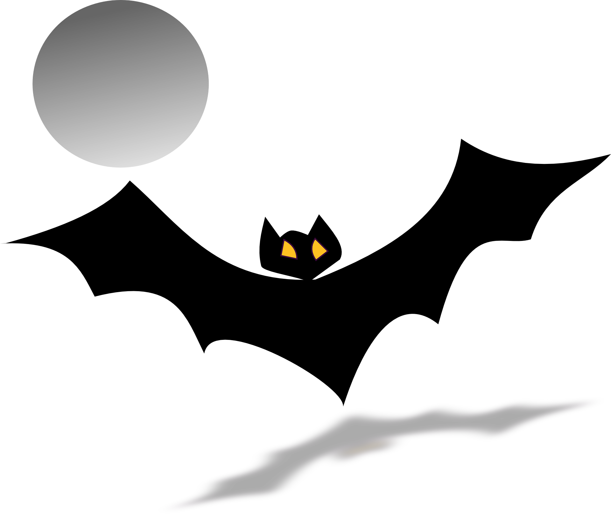
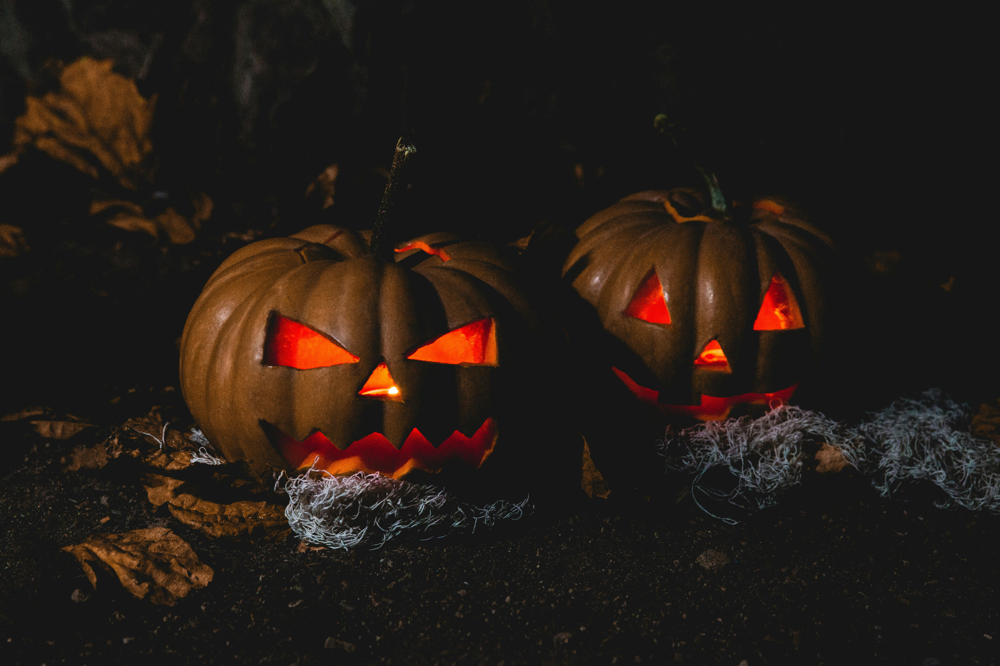

What Are Vampires?
Vampires are a common sight around holidays like Halloween, but what actually are they?
Vampires are creatures of legend, that prey on humans. Although several different interpretations of vampires exist, there are some characteristics that remain fairly consistent in vampire folklore. Vampires are thought to have fangs and consume human blood. Vampires are often considered to be undead, rising from their graves at night. The appearance of vampires differs between interpretations - vampires can be grotesque or unnaturally beautiful. However, most interpretations agree that vampires have very pale skin. Other characteristics of vampires can include the inability to cast a shadow, inability to cast a reflection, and an inability to be captured on film, the ability to mesmerize people, and the ability to turn into a bat. People can become vampires in many different ways according to various legends, but one of the most common ways for a person to become a vampire is by being bitten by a vampire.
How to Protect Against Vampires
Vampires are thought to be very strong creatures, so how can people defend themselves against them?
Although vampires have a lot of abilities, they also have a lot of weaknesses, according to vampire folklore. Vampires can be destroyed and repelled through various means. The most common ways to destroy a vampire include a wooden stake through the heart, fire, and exposure to sunlight. Ways to repel vampires include running water, garlic, and Christian implements like holy water and crucifixes. In some legends, it is believed that vampires cannot enter a home unless they are invited in. In other legends, it is believed that vampires are compelled to count seeds and grains, and potential victims can escape by scattering these objects on the ground, distracting the vampire. Silver has also been considered a weakness of vampires by some, although this is not as common.
Vampires and Halloween
How are vampires related to Halloween?
In modern times, vampires are considered a staple of Halloween. It is practically impossible to go without seeing a vampire whenever October rolls around. Halloween is a holiday that focuses on the supernatural, the unknown, the creepy, and the grim. Therefore, it would make sense that vampires, creatures of the supernatural would be associated with the holiday. Vampire fictional works, such as Bram Stoker's novel "Dracula" published in 1897 helped to shape people's modern day understanding of vampires and associate the creatures with creepy and chilling tales. It then follows that vampires would be worked into various Halloween stories, along with werewolves, witches, monsters, and mummies. Vampires embody people's fear of the supernatural, of forces humans cannot quite understand, and these fears are especially heightened around Halloween. Therefore, although vampires have legends, lore, and stories outside of Halloween, they are often thought of more around Halloween and people incorporate them into the holiday itself.
